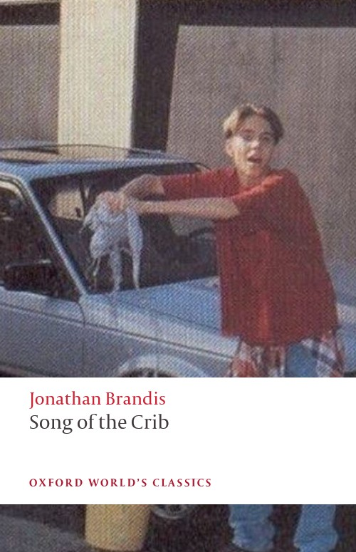

Song of the Crib

By the early 1990s, Jonathan Brandis was already familiar to young audiences, having appeared in films like The NeverEnding Story II: The Next Chapter and played young Bill Denbrough in the television adaptation of Stephen King's IT. Acting wasn't his only interest, though. Brandis was an avid writer, and while attending the San Fernando Valley Professional School, he tried his hand at writing and directing a horror screenplay of his own: Song of the Crib. His best-known television role, as Lucas Wolenczak in seaQuest DSV, was still to come. (Notably, he would also write an episode for the show, Siamese Dream.)
According to Raymond Garcia, who contributed the screenplay to the Jonathan Brandis memorial website jonathanbrandis.org around 2004—2005 and identified himself as one of Brandis's teachers, the project was filmed at school, with Danny Cooksey playing Jeff Grayland, Brandis playing Jeff's best friend Mitch Buckman, and other students filling out the background. Garcia remembered the production as unfinished, but singled out Brandis's special effects for praise, saying they worked particularly well in the unedited footage, which he described as having been done in one take. He didn't explain how the effects were achieved, though, and the surviving screenplay alone doesn't tell us whether they relied on camera tricks, physical props, editing, or some combination of techniques.
(Notably, Brandis would only own a computer until after turning eighteen, despite ironically playing the technically gifted Lucas Wolenczak on seaQuest DSV, which does give us reason not to assume that the effects here were computer-generated.) And Cooksey was no stranger to acting, either. He had played Sam McKinney on Diff'rent Strokes and appeared as Tim in Terminator 2: Judgment Day.
The story itself follows fifteen-year-old Jeff as his day begins to slip out of joint. A strange disappearance during his morning routine gives way to increasingly disturbing experiences at school and at home: he loses track of time, objects seem to vanish or turn up where they shouldn't, and a purple crib keeps appearing in his path. His best friend Mitch, played by Brandis, does not treat these events seriously at first. The two joke about girls, talk back to their teacher, and stop at Jeff's house for a glass of water, all while Jeff struggles to work out whether he's dreaming or losing his grip on reality. By the final act, the strange images have begun to connect the characters in ways that neither boy quite understands.
Song of the Crib was never entirely finished, and the footage Garcia described does not appear to have survived in any readily accessible form. What follows is the surviving screenplay, arranged in four acts. I've corrected a couple of minor typos, apparent scanning errors, and inconsistent formatting for readability.
Act I
Fade in:
1Estab. Shot — The Grayland House
2Close shot — Digital Clock
The bright red numbers read 6:45. There’s a click and we hear Tom Petty’s “Runnin’ Down a Dream”.
3Far Shot — Bed
We see JEFF GRAYLAND (15) move around in bed, get up, and move towards the closet.
4Cut to — Various shots of getting dressed.
5Far Shot — Room
Jeff is now dressed and crosses over to the desk and shuts off Tom Petty. Then leaves.
6Int. The Grayland living room
We see Jeff’s mother on the couch watching T.V. She notices Jeff coming down the stairs.
MRS. GRAYLAND
Good morning, honey.
JEFF
Morning.
MRS. GRAYLAND
Breakfast?
Mrs. Grayland hands Jeff his backpack and Jeff heads toward the front door.
JEFF
Nah, I’m alright.
Jeff grabs his skateboard that always sits by the front door and leaves.
7Ext. Jeff’s house — Morning
Jeff slams his skateboard down on the sidewalk and is about to skate away when he stops, looks down at the ground and spots a quarter. Jeff leans over to get it.
7aClose shot — Quarter
Jeff’s hand reaches into frame to grab the quarter but his fingers only hit the pavement. The quarter is gone.
7bFar Shot — Jeff on sidewalk
Jeff looks around to see if the quarter rolled away, but it isn’t there. Jeff gives up on this and skates away.
7c
We follow Jeff down the sidewalk and onto the street. Then:
Fade out:
End of Act I. Opening credits.
Act II
Fade in:
8Ext. School — 7:50 a.m.
School parking lot. We see Jeff skate up to the school and walk in the front door.
9Int. School
Jeff has passed several students who are busy getting organized. As Jeff passes the students one by one they give him the usual “Hi, Jeff”.
9aInt. — Classroom
Jeff enters the room and sits near the back. Jeff sits back in his chair and looks at BRIDGET COAL (15) and mouths a “Hi”. She does the same.
9bNew Angle — Teacher
Mr. Curry (35) stands up and walks toward the center of the room.
MR. CURRY
Okay… Turn to page 61… number 14.
Mr. Curry asks the question:
MR. CURRY
Qu’est-ce que François et Didier sont en train de faire? Kyle, can you answer please?
Reverse Angle:
KYLE FORD (14) is still flipping through the pages of the book, and finally comes across page 61.
KYLE
Uh… Number 14, did you say?… Okay, here it is… it says… uh, What is François and Didier’s train fare?
MR. CURRY
No, you’re way off.
Mr. Curry turns to the blackboard to write the correction. The blackboard reads May 17, 1991. Mr. Curry notices that Jeff is talking to MITCH BUCKMAN (15), Jeff’s best friend. They’re chatting away about who knows what.
MITCH
So she told me to meet her friend.
JEFF
What did you tell her?
MITCH
I told her to fuck off.
Mr. Curry interrupts this.
MR. CURRY
Gentlemen, please! Do you mind? I’m trying to teach a lesson. And watch your language.
The two boys look at each other and then back at Curry.
Mr. Curry returns to the board and then turns.
MR. CURRY
Now Jeff, can you please tell me what this means?
Mr. Curry points to the board. Jeff stops talking to Mitch and looks at the blackboard. Jeff is astonished!
10Jeff’s POV
The blackboard is nothing but a bunch of criss-crossed scribbled colored markings. Even though this is a POV, the camera pans from the board around the room to Jeff’s face, who is stunned. We slowly pan back around the room to the board which now reads “French Sucks”. We quickly pan back to Jeff.
JEFF
(shocked)
Who the hell wrote that?
MR. CURRY
I did. It’s called French.
JEFF
That’s French?
MR. CURRY
Yes. Now, can you please tell me what this means? Jeff, what does this mean, Jeff!
We zoom in on Curry.
11New Angle — slightly tilted shot — desk
As we cut to this shot, Jeff suddenly and quickly lifts his head from the desk. He’s a little sweaty and we can see he’s been dreaming the whole thing.
MR. CURRY
Now, can you please tell me what this means?
Jeff looks at the board and it reads “Qu’est-ce que François et Didier sont en train de faire?”. Mr. Curry is standing by the board waiting for an answer.
JEFF
Beats the hell out of me.
Fade out:
End of Act II.
Act III
Fade in:
12Ext. — sidewalk (omitted in original script)
Jeff, Mitch and Kyle are all walking down a long sidewalk. Jeff is carrying his skateboard. All three are talking about something. We think it’s about Bridget.
JEFF
Yeah, she’s alright.
MITCH
She can be kind of a pain in the ass sometimes.
KYLE
True, but she’s cute, so that’s all that counts.
MITCH
Wait, just wait a second… did you notice how she looks at Curry? Man, I think she wants him.
KYLE
Hey, I’ve noticed it, too. Oh, by the way, why were you being such a dick to Mr. Curry today?
Jeff hesitates, and then:
JEFF
Oh, you know me, always trying to bug the hell out of Curry.
MITCH
You and me both.
Kyle stops and looks at his watch.
KYLE
Listen, I gotta jam, I’ll ah… see you guys on Monday.
JEFF
See ya, man.
Mitch turns to Jeff.
MITCH
I gotta go, too. Oh, by the way, do you have any water or anything? I’m kind of thirsty.
They reach the steps.
JEFF
Sure, come on in.
13Int. Jeff’s house
Jeff and Mitch enter the house. Jeff goes into the kitchen and Mitch stays in the living room and turns on the T.V.
13aFar shot — Kitchen
Jeff walks toward the counter and pulls a glass out of the cupboard.
13bClose shot — Glass
We pan from Jeff’s hand picking up the glass from the counter to the sink. Jeff’s hand reaches to turn on the faucet but the faucet avoids Jeff’s hand. Jeff’s hand and the faucet are like two negative magnets. Mitch calls to him from the other room.
MITCH (o.s.)
Come on. Hurry up, man. I gotta go!
JEFF
Hold on a sec!
Jeff grabs hold of the insane faucet that seems to have a mind of its own. He fills the glass with water and the faucet shuts off by itself. Jeff goes into the living room and gives Mitch the water.
MITCH
Can you get the water?
JEFF
What?
MITCH
Can you get the water? Can you get the water?
14New Angle — Kitchen sink
Jeff raises his head quickly from the sink. He’s been dozing off again. Mitch enters the kitchen.
MITCH
Jeff, can you get me the water? I gotta go.
Jeff, a little stunned, hands Mitch the glass of water, looks at Mitch, and then at the glass.
15Close Shot — Glass
The glass is filled to the brim with blood.
JEFF
Mitch, you’d better go. I don’t feel so good.
MITCH
Are you sure?
JEFF
Yeah.
(out of breath)
I’ll see you Monday.
16Ext. Jeff’s House
Mitch walks out the front door and Jeff follows and starts walking down the sidewalk.
JEFF
(rubbing his head)
Okay, I’ll talk to you la…
Jeff suddenly walks right into a bright purple crib, nearly tipping it over:
JEFF
Ahh!
Mitch turns to him.
MITCH
What? What’s wrong?
Jeff disregards Mitch’s question and runs past the crib.
MITCH
(yelling)
Jeff! Jeff, hold on, tell me what’s going on.
17Long shot — sidewalk
Jeff keeps on running up the sidewalk and doesn’t look back. We hear Guns N' Roses' “Welcome to the Jungle” being played loudly in the background. Jeff is suddenly halted to a stop by a silver shopping cart racing towards him. He jumps out of the way just in time.
18Close up — Jeff
He lifts his head off the pavement. Now he’s really sweaty and has a cut on his face. He looks back and the shopping cart is gone.
19New Angle
Jeff is rising from the pavement. Jeff turns and runs up an alternate sidewalk. A crib appears in his path again, he hesitates, but runs right past it. He turns a corner.
20Extremely far shot — Alley
Jeff runs into the alley, gets about 20 feet up and then stops.
21Jeff’s POV — Down the Alley
A man dressed in all black is rocking a purple crib back and forth.
MAN
(deadpan)
Rock-a-bye baby, on the treetop.
22Resume Angle — closer shot — Jeff
Jeff is speechless. He runs to the other side of the alley and practically gets run over by a moving car. Jeff nearly falls over. We zoom back as Jeff picks himself up, starts running and bumps into Mitch. “Welcome to the Jungle” slowly fades into silence. Mitch is pissed off.
MITCH
Jeff, can you tell me what the hell is going on?
JEFF
Mitch, I’m scared. I’ve been seeing these things… these… different objects. A crib is one of them.
MITCH
A crib?
JEFF
(out of breath)
That’s one of them. But sometimes… sometimes I’m only dreaming and other times… other times I think it’s real.
MITCH
You’re on drugs!
JEFF
No, I’m not on drugs. It’s like a disease or something.
Jeff looks at Mitch and sees that he’s not buying it. Then Mitch’s hand rises and holds up three fingers.
MITCH
How many fingers am I holding up?
JEFF
What?
MITCH
How many fingers am I holding up?
JEFF
Three. Why?
MITCH
You’re fine.
They both start walking toward the house.
MITCH
Go back inside, rest for a while, and I’ll see you Monday.
JEFF
Yeah, see ya Monday.
Mitch leaves and we zoom back slowly to Jeff’s face, who is terrified and we:
Fade out:
End of Act III.
Act IV
Fade in:
23Int. Jeff’s room
Close shot — digital clock. The digital clock now reads 4:29.
24New Angle — Bedroom door
Jeff enters and we pan with him as he crosses over to the bed and lies down.
25Close up — Jeff
Jeff lies on the bed for a couple of seconds, then reaches over to the desk and picks up a magazine. We pan with his hand. He picks up a magazine that sits right next to the clock that still reads 4:29. He brings the magazine back to the bed. He flips through it for a couple of seconds and we pan with his hand as he puts it back upon the table next to the clock which now reads 5:44. The camera does a whip-back pan to Jeff.
JEFF
(softly)
Oh my God!
Jeff quickly gets out of bed and runs out of the room. We hear Faith No More’s “Falling to Pieces” being played in the background as Jeff runs out into the hallway.
26Int. Jeff’s living room
Jeff hauls ass down the stairs and turns the corner to the bathroom. He reaches the bathroom and tries to calm himself. Suddenly the door slams shut, the lights shut off and strobes flood the room. Jeff in complete panic, forces the door open and heads toward the front door.
27Ext. — Jeff’s house — Nearly dusk
Jeff rushes out the front door and onto a narrow sidewalk, waits a beat, then takes off around a corner in pure terror.
JEFF
(yelling)
Help! Help me!
28Long Shot — Alley
Jeff tears around the corner and runs into an alley. It’s the same alley he ran into just moments earlier.
29Closer Shot — Jeff
We move with him as he runs in fear down the alley. He runs right into another crib. Jeff totally disregards it and runs further into the alley. Jeff makes another turn in the alley.
30New Angle — Alley
Jeff makes the turn and bumps into an old woman with a broom.
She is furious.
OLD WOMAN
Nahh! Out! Get out of here!
Jeff (trying to avoid the old woman) runs into a wall and up a metal ladder.
31New Angle — Roof
Jeff makes it to the top of the gravel covered roof. Suddenly Jeff notices that the gravel is bothering his feet. He looks down.
32Close shot — Jeff’s feet
Jeff’s shoes are gone!
33Resume shot — Jeff on roof
Jeff hears something behind him. He turns quickly and we see a beach ball bouncing behind him. Jeff is momentarily startled, loses his balance, and falls head first to the pavement.
Fade out:
End of song.
34Fade in
Close up — Jeff’s face. We slowly zoom back to reveal Jeff’s body lying on the pavement and a beach ball lying by his side.
34aReverse angle — Jeff’s body
A man runs up to Jeff and shakes Jeff’s side.
MAN
Hey, hey kid, you okay? Hey, kid, wake up! Hey, Jeff, wake up! Hey, Jeff, wake up!
35We cut to — Far Shot — room
Jeff’s mother is sitting on the side of the bed shaking Jeff on his side.
MRS. GRAYLAND
Hey, Jeff, wake up. You’re gonna be late for school.
Jeff pushes his mother out of the way and rushes out of the room.
36Int. — The Grayland guest room
Jeff rushes in to the phone, picks it up, and dials. There’s an answer.
JEFF
Hello? Hello, is Mitch there… Hello, Mitch, oh, God, you won’t believe the dream I had last night!
36aClose up — Mitch
Mitch is talking on the phone in his bedroom.
MITCH
You, too? Man, these images kept coming back and haunting me. Kind of like “Aliens” or something.
37Resume previous angle — Jeff
JEFF
(astonished)
You’re kidding me!
36cResume angle — Mitch on phone
MITCH
No. And get this. Kyle, Dave, Tim, Todd and Bridget called me and told me that they all had a dream about a crib, too.
36dResume angle — Jeff on phone
JEFF
Mitch, what the hell is going on? I mean… wait a minute…
(realizing)
you and I had a dream about a crib. Mitch, how did you know?
36eResume angle — Mitch
MITCH
(quickly)
I’ll call you back later. I’m uh… babysitting.
He hangs up.
37Far Shot — Grayland Guest Room
Jeff is yelling into the phone.
JEFF
Mitch! Mitch!
But it’s too late. Mitch has hung up.
38Closer shot — Jeff
Jeff hangs up the phone and is blinded with fear.
JEFF
(softly)
Mitch, what have you done?
39Cut to: Mitch in his room
We slowly zoom back to reveal a purple crib in front of Mitch, who is singing softly to it and rocking it back and forth.
MITCH
Rock-a-bye baby, on the treetop.
Then, Mitch stops rocking the crib for a moment, looks to camera and smiles.
Then:
Fade to black
40
On the black screen we see in white letters:
To Be Continued
Fade to black. We hear Faith No More’s “Epic” in the background.
End credits.
The End